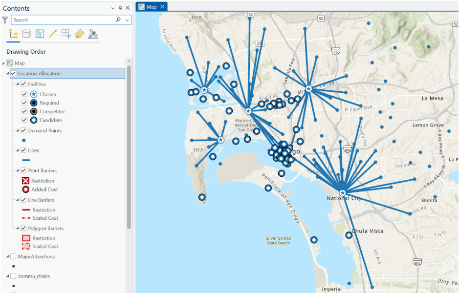

Overview
This project analyzed access to major attractions in San Diego using location-allocation methods. Community points and attraction points were used to identify which areas could reach selected destinations within a 10-minute drive.
Methods
- Used automobile travel time as the network cost.
- Directed demand toward five selected facilities.
- Applied a 10-minute cutoff to evaluate service coverage.
- Compared which communities were served within the defined travel threshold.
Outcome
The final map shows which San Diego communities fall within the accessibility range of the chosen attractions. This type of analysis can support planning decisions related to recreation access, public amenities, and community service coverage.